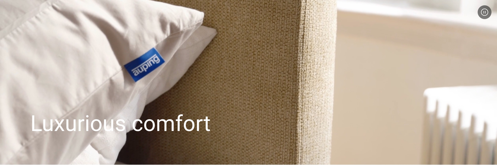

product model

product variant
Original Pure white Original Pure white met voetbord
The Original box spring with a Nice headboard, Sienna footboard in Grid / Natural and legs in Pure white is a real eye-catcher in your bedroom.
Find a storeOriginal Pure white Original Pure white met voetbord
Deze getoonde combinatie bestaat uit: Matras: Comfort-matras Topper: Comfort-topper Spiraalbodem: Vlak Breedte boxspring: 140 cm Lengte boxspring: 200 cm Kleur boxspring: Beige Het voordeel wordt automatisch berekend wanneer je deze boxspring set toevoegt aan je winkelmandje View all
Specifications
Find a store Build your own Sustainably made in deventer Original Pure white Sustainably made in deventer Personalise your order
Why choose this Original box spring?
The Auping Original box spring is as a box spring is meant to be with its high-quality finish and great attention to detail. This variation in with flat bed base, topper, Nice headboard and footboard in Grid / Natural and legs in Pure white is a real eye-catcher in your bedroom. The Auping Original box spring stands for its unique originality: unique because of many possibilities, timeless and attention to detail and finishes
The displayed combination consist of
Mesh base: Flat Mattress: Comfort Topper: Comfort Headboard: Upholstered Colour legs: Pure white Fabric colour: Grid / Natural Mesh base: Flat Mattress: Comfort Topper: Comfort Headboard: Upholstered Colour legs: Pure white Fabric colour: Grid / Natural Mesh base: Flat Mattress: Comfort Topper: Comfort Headboard: Upholstered Colour legs: Pure white
The Original box spring
The Original box spring has a timeless design with great attention to detail and a high-quality finish. The legs of the Original box spring are placed in such a way that the box spring appears to float a little. With a choice of 8 headboards and 95 different fabrics, you can customise the Original boxspring entirely to your wishes. Want to know more about the Original Boxspring? Take a look at the look book page View the Original box spring Specifications Box spring Original / Tone / Criade / Kiruna Width box spring (in cm) 80 / 90 / 100 / 120 / 140 / 160 / 180 / 200 Length box spring (in cm) 200 / 210 / 220 Height box spring Low: 38 cm / High: + 5 cm Sleep surfaces 1 surface / 2 surfaces Bed base Flat / 1 motor / 2 motor / 3 motor Mattress Comfort / Deluxe / Prestige Number of mattresses 1 double mattress / 2 single mattresses Mattress firmness Soft / Medium / Firm / Extra firm Topper Comfort / Deluxe / Prestige rich / Prestige natural / Prestige visco More Specifications
Complete your Auping Original box spring with beautiful, matching accessories.
To turn the Original box spring into your dream bed, you can add or adjust accessories in the configurator. You can expand the bed with a footboard or upholstered headboard, bedside tables or the coloured legs. Choose the mattress and topper that suits you This Original box spring includes Comfort mattress and Comfort topper. Making a different choice? The Original boxspring is available with all our mattresses and toppers, change your choice in the configurator. More box springs from Auping Our collection consists of 4 box springs that you can put together exactly as you wish. Choose your own colours, materials and accessories. In total, there are 2.8 billion possibilities in our online configurator. Looking for inspiration for your own bedroom or want to know more about our Boxsprings? Then take a look at the online lookbooks. Criade Original Kiruna Tone Criade Original Kiruna Tone Criade Original Kiruna More from Auping Make an appointment Discover our beds More Original box springs Compiled for you Original boxspring Sand beige met Wink hoofdbord in Facet 1037 beige More Info Fully configurable Original Cool grey More Info Build your own Fully configurable Original Dusty red More Info Build your own Fully configurable Original Deep black More Info Build your own Fully configurable Original Warm grey More Info Build your own Fully configurable Original Pine green Build your own Fully configurable Original Blush More Info Build your own
Discover more
product variant
Criade box spring with Blush frame
More info →product variant
Criade box spring with Night blue frame
More info →product variant
Criade box spring with Warm grey frame
More info →product model
Kiruna - Comfortable luxury
More info →product variant
Kiruna box spring Deep black & Black grey
More info →product variant
Kiruna box spring Sand beige and Remix / Grey
More info →product variant